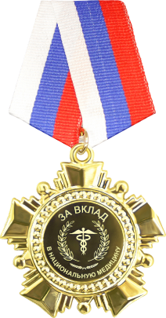
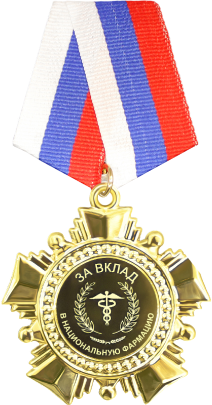

Поднимите дух своей команды и подчеркните исключительность их работы!
Проявите признание и выразите благодарность тем, кто делает выдающийся вклад в здоровье нации.
Подчеркните значимость ежедневной самоотдачи и профессионализма ваших работников.
«За вклад в национальную медицину»
«За вклад в национальную фармацию»
О награде
Почетная медаль Национальной ассоциации медицинских и фармацевтических организаций «За вклад в национальную медицину» и «За вклад в национальную фармацию» учреждена в 2024 году в целях поощрения работников медицинских и фармацевтических организаций за неоценимый вклад в развитие медицины и фармации.
Награда является знаком профессионального призвания и высокого признания достижений среди коллег и общества, символом глубокой благодарности и уважения к ежедневному профессионализму, инновациям и бесконечному стремлению к совершенству тех, кто стоит на страже здоровья нации.
Этот знак отличия подчеркивает особую роль медицинских и фармацевтических работников, которые с огромным трудом и самоотверженностью служат обществу. Вручение награды является общественным и коллективным признанием заслуг тех, кто ежедневно и самоотверженно спасает жизни, сохраняет и укрепляет здоровье нации.
Категории награждаемых
Лица, имеющие высшее медицинское образование
Лица, имеющие высшее фармацевтическое образование
Лица, имеющие среднее специальное медицинское образование
Лица, имеющие среднее специальное фармацевтическое образование
Иные работники отрасли медицины и фармации
Представление к награде подается руководителем медицинской или фармацевтической организации или иным уполномоченным лицом
Состав наградного комплекта
- Почетная медаль «За вклад в национальную медицину» или «За вклад в национальную фармацию»
- Футляр для медали
- Удостоверение к награде
- Выписка из приказа о награждении
Как наградить
В соответствии со статьей 191 Трудового Кодекса Российской Федерации, работодатель поощряет работников, добросовестно исполняющих трудовые обязанности
Для награждения работников вашей организации необходимо
Подать представление к награде в электронном виде, заполнив форму или отправить заполненный бланк на электронную почту:
nagrada@med.associatesОплатить организационный сбор
Получить наградные комплекты почтовой, курьерской службой или лично в пункте выдачи ФГУП «Главный центр специальной связи»